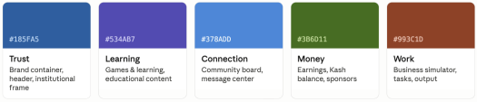

A single interface couldn't meet the needs of parents and kids across 5 age groups, so I designed a multi-portal ecosystem that prioritized clarity with minimal cognitive load and high engagement.
This is how I did it...
This is how I did it...

Kid Commerce
An webapp to gamify financial literacy for youth
MY ROLE:
Designer, UX Researcher, and Project Manager
TIMELINE:
8 weeks 2023 | Redesigned 2026
< This is a prototype!
Kid Commerce
An webapp to gamify financial literacy for youth
MY ROLE:
Designer, UX Researcher, and Project Manager
TIMELINE
8 weeks 2023 | Redesigned 2026
Process for Kid Commerce
Research
Design Tensions
1. Designing a single experience for parents and children creates conflicting needs.
2. Maintaining engagement requires balacing rewards and long-term learning.
3. Parents need transparency, control, and access to sufficient knowledge.
2. Maintaining engagement requires balacing rewards and long-term learning.
3. Parents need transparency, control, and access to sufficient knowledge.
Designing a single experience for parents and children creates conflicting needs.
Maintaining engagement requires balacing rewards and long-term learning.
Parents need transparency, control, and access to sufficient knowledge.
Maintaining engagement requires balacing rewards and long-term learning.
Parents need transparency, control, and access to sufficient knowledge.
Discovery
*Note: This research reflects my thinking at the time of this project.
The discovery phase revealed that a single design would not adequately address the diverse needs of our user base. Consequently, I have chosen to develop distinct portals and pages tailored to different user demographics. Multiple user-centered websites housed within one unified platform.
The discovery phase revealed that a single design would not adequately address the diverse needs of our user base. Consequently, I have chosen to develop distinct portals and pages tailored to different user demographics. Multiple user-centered websites housed within one unified platform.


What the Research Told Me
Clearing the design tensions:
1. A single static interface cannot support the needs of both children and parents.
2. Comprehension needs to adapt to user development.
3. Parents need transparency and easy access to information, children need familiar and interesting content.
1. A single static interface cannot support the needs of both children and parents.
2. Comprehension needs to adapt to user development.
3. Parents need transparency and easy access to information, children need familiar and interesting content.
1. A single static interface cannot support the needs of both children and parents.
2. Comprehension needs to adapt to user development.
3. Parents need transparency and easy access to information, children need familiar and interesting content.
2. Comprehension needs to adapt to user development.
3. Parents need transparency and easy access to information, children need familiar and interesting content.
So..
How might we create a user-centric website structure that accommodates the diverse needs of our various audiences while ensuring swift loading times, optimal responsiveness, and numerous multifaceted and compelling content?
Inside My Design Thinking
Color-to-Meaning

Every color earned its position with intention. The color is a second navigation system running underneath the first.
Every color earned its position with intention. The color is a second navigation system running underneath the first.
Parent Portal
The parent portal is intentionally quieter, they are monitoring before engaging.
The parent portal is intentionally quieter, they are monitoring before engaging.
Where It Landed
These screens reflect the redesigned direction. The system architecture and research are from 2023, the visual execution is from 2026.
These screens reflect the redesigned direction. The system architecture and research are from 2023, the visual execution is from 2026.

This project was designed in collaboration with a startup founder whose personal circumstances required him to step away. The work shown here reflects a complete design process with research, system architecture, and high-fidelity screens, built without a shipped outcome, which is sometimes exactly how real design work goes.
This project was designed in collaboration with a startup founder whose personal circumstances required him to step away. The work shown here reflects a complete design process with research, system architecture, and high-fidelity screens, built without a shipped outcome, which is sometimes exactly how real design work goes.